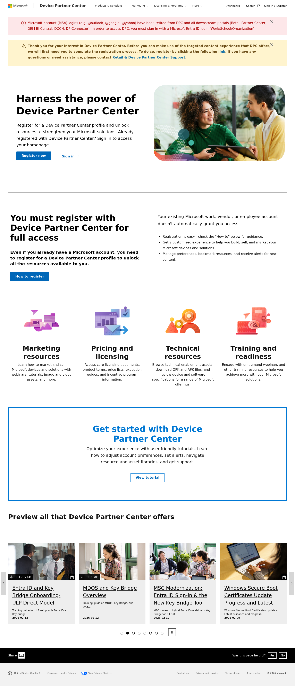
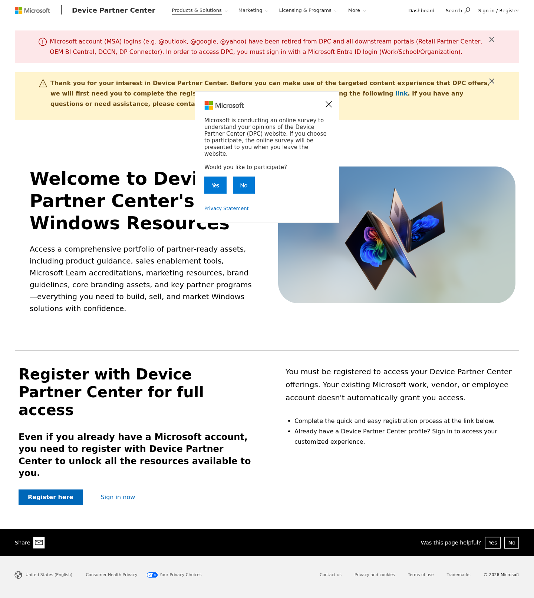
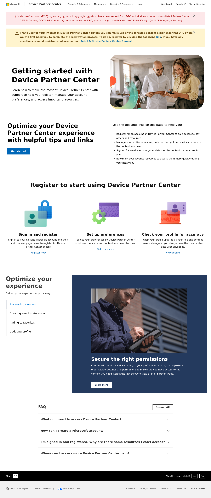
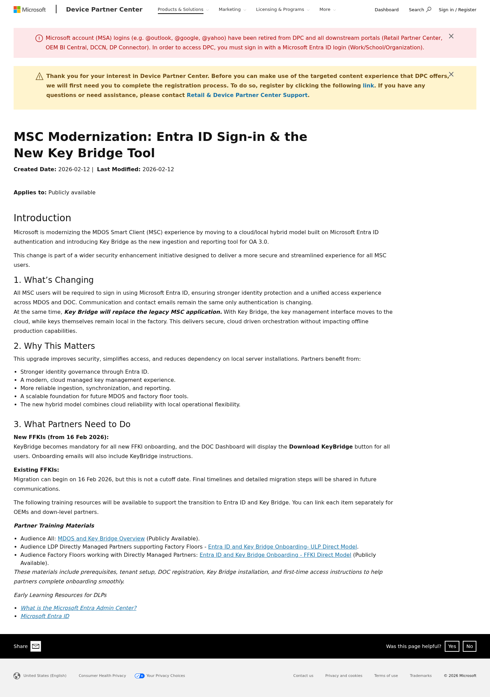
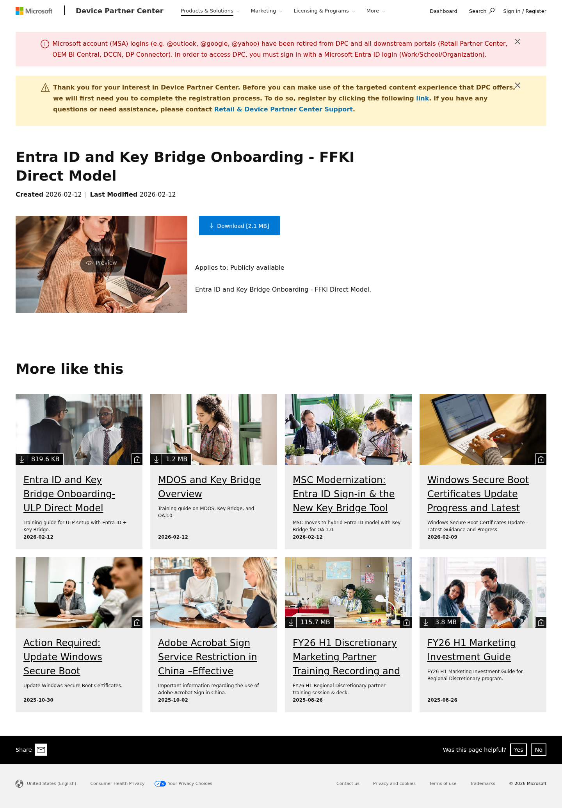
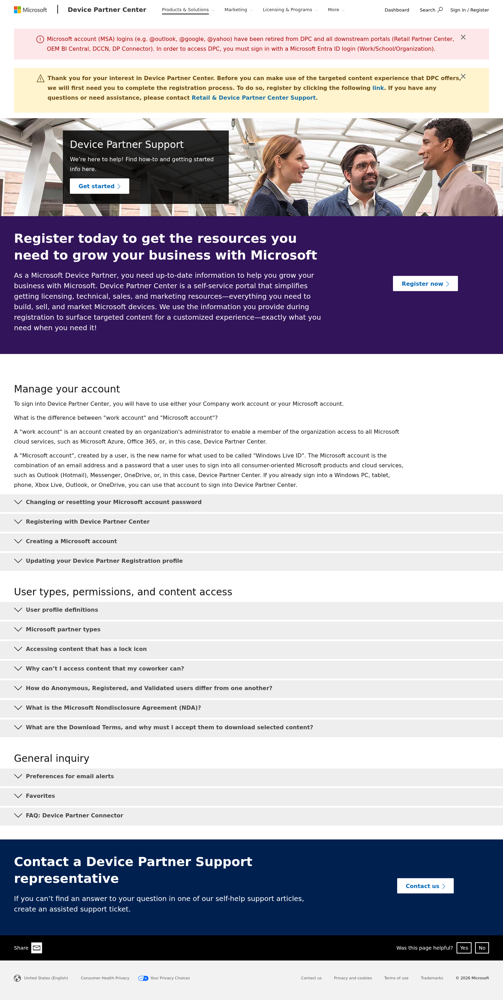
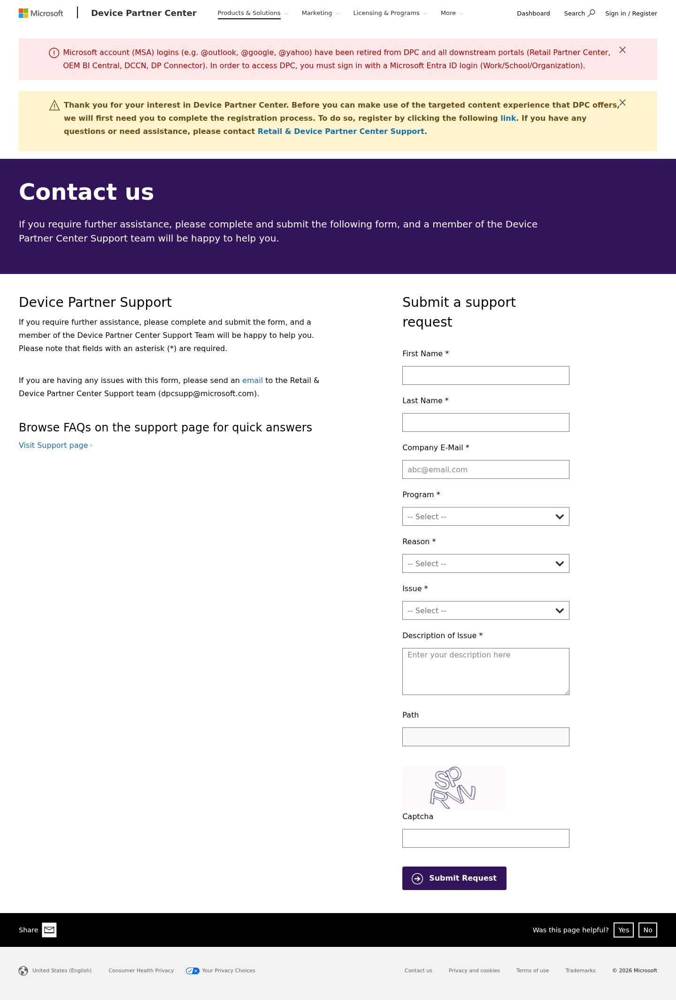
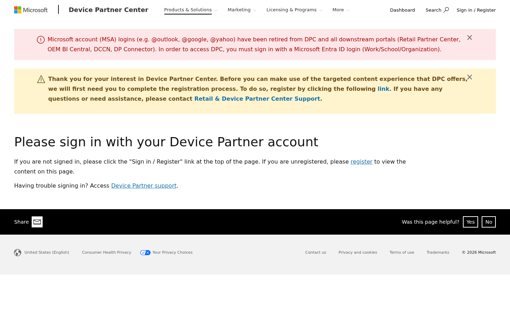
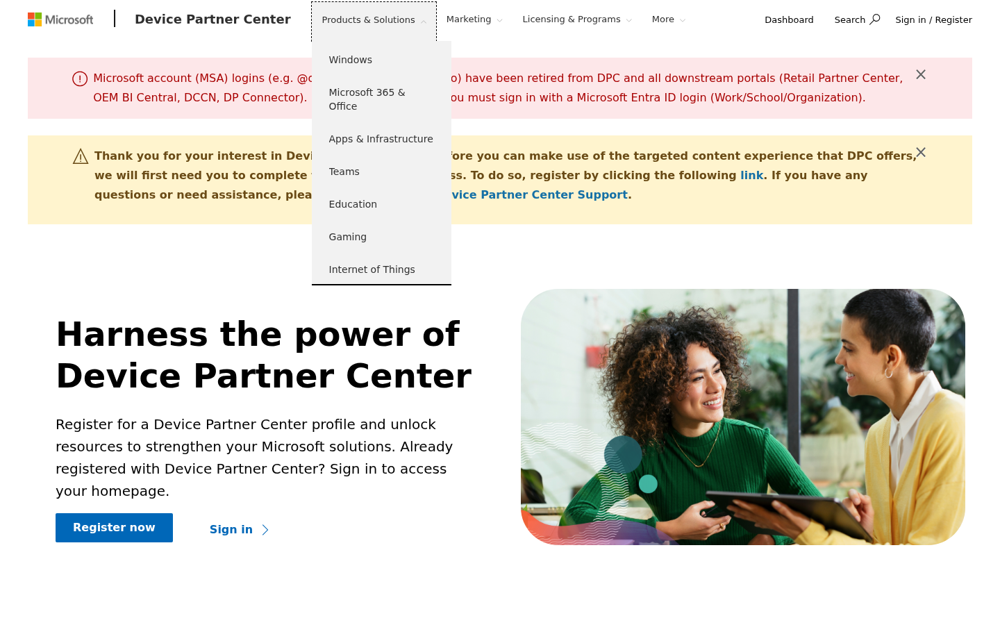
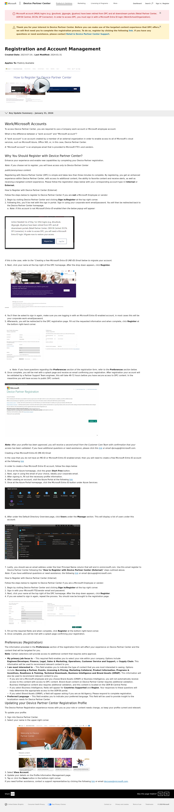

flex-* / mssc component framework as partner.microsoft.com. The site is heavily auth-gated—most product and resource pages require Microsoft Entra ID sign-in and DPC registration. Publicly accessible pages are limited to the homepage, getting-started guide, public communications, some asset detail pages, support/FAQ, and contact form. The authenticated dashboard and personalized content behind login walls represent a significant portion of the site that falls outside typical EDS migration scope.
CMS Platform: Sitecore, evidenced by CDP.js, /mssc/ asset paths, Sitecore CDP/Engage integration, and .ashx handler files.
Key Distinction from partner.microsoft.com: DPC uses the same Sitecore framework but has a simpler footer (no multi-column link grid), email-only sharing (no social media links), and a pervasive auth-gate pattern where content is shown/hidden based on registration status and partner type.
| # | Template Name | Purpose | Complexity | Example URL(s) | Variations / Conditional Logic |
|---|---|---|---|---|---|
| 1 | Homepage | Primary landing page with hero, registration callout, category cards, CTA banner, and asset carousel. | High | /en-US/ |
|
| 2 | Product Landing Page | Category hub pages for each product line (Windows, M365, Teams, etc.). Hero + registration callout. Content hidden behind auth. | Medium | /en-us/windows, /en-us/teams, /en-us/gaming, /en-us/edu-prod-solutions-page, /en-us/iot |
|
| 3 | Content/Guide Page | Rich content pages with hero, text+image sections, icon cards, accordion/tabs, FAQ, and CTA sections. Used for getting-started guides and informational pages. | High | /getting-started-guide |
|
| 4 | Communication / Article Page | Rich-text article pages for partner communications, announcements, and how-to guides. Title + date metadata + body text with embedded images and links. | Medium | /communications/comm-msc-modernization-entra-id-sign-in-new-key-bridge-tools, /communications/comm-registration-account-management |
|
| 5 | Asset Detail Page | Downloadable asset pages with thumbnail preview, download button, metadata (date, file size, access level), and "More like this" carousel. | Medium | /assets/detail/entra-id-key-bridge-onboarding-ffki-direct-model-pdf |
|
| 6 | Support / FAQ Page | Support hub with hero, registration CTA banner, grouped accordion FAQ sections, and contact CTA. | Medium | /en-us/support |
|
| 7 | Contact / Form Page | Support request form with hero banner, left-column description, right-column form with cascading dropdowns, CAPTCHA, and submit button. | High | /en-us/contact-us |
|
| # | Block / Component | Complexity | Description & Behaviors | Screenshot | Notes |
|---|---|---|---|---|---|
| 1 | Global Header / Navigation | High | Microsoft logo, "Device Partner Center" branding, 4 nav items (Products & Solutions, Marketing, Licensing & Programs, More) with dropdown menus, Dashboard link, Search button, Sign in/Register link. Responsive hamburger on mobile. | dpc-nav-products.png |
Dropdown menus are single-level lists (simpler than partner.microsoft.com mega-menus). Search triggers a full-page search overlay. Dashboard link redirects to external registration portal. |
| 2 | Notification Banner (Red) | Low | Dismissible red/orange alert banner with info icon, text content, and close button (×). Used for MSA retirement notice. | dpc-homepage-desktop.png |
Cookie-persisted dismiss state. Red background with white text. Component: flexnotification. |
| 3 | Notification Banner (Yellow/Warning) | Low | Dismissible yellow/cream warning banner with warning icon, rich text (including links), and close button. Used for registration prompt. | dpc-homepage-desktop.png |
Contains inline links. Slightly different styling from red variant. Same flexnotification component with different theme. |
| 4 | Share / Feedback Bar | Low | "Share" with email icon + "Was this page helpful?" Yes/No buttons. Simpler than partner.microsoft.com (email only, no social media). | dpc-homepage-desktop.png |
Present on all pages. No social media sharing (email only via mailto:). Feedback submits to analytics. |
| 5 | Global Footer | Low | Single-row footer with locale selector, Consumer Health Privacy, Your Privacy Choices, Contact us, Privacy & cookies, Terms of use, Trademarks, copyright. Much simpler than partner.microsoft.com (no multi-column link grid). | dpc-homepage-desktop.png |
Minimal footer. Locale selector links to /localeselection page. |
| # | Block / Component | Complexity | Description & Behaviors | Found On | Notes |
|---|---|---|---|---|---|
| 6 | Hero (flex-hero-v2) | Medium | Two-column hero: left text (H1, description, CTA buttons) + right image. Variants: standard light background, dark overlay with text overlay on image. | Homepage, Windows, Getting Started, Support | JS: flexhero. Support page uses dark image overlay variant. Getting Started uses standard light variant. |
| 7 | Registration Callout (two-column) | Medium | Two-column section: left has H2, description, CTA button; right has paragraph text + bullet list. Used specifically for the "You must register" messaging. | Homepage, Windows | Consistent pattern across product pages. Contains registration-specific messaging and links to dpcregistration.microsoft.com. |
| 8 | Icon Card Grid (4-up) | Medium | 4-column grid of cards with colorful illustrations/icons at top, H3 heading, description text. No CTA links in public view (likely linked when authenticated). | Homepage | Categories: Marketing resources, Pricing & licensing, Technical resources, Training & readiness. Uses flexcontainer component. |
| 9 | CTA Banner (centered) | Low | Full-width light blue/bordered banner with centered H2, description text, and outlined CTA button. Used for "Get started" callouts. | Homepage | Clean, simple centered layout. Links to tutorial/getting-started content. |
| 10 | Asset Carousel (CQC Carousel V2) | High | Horizontal scrolling carousel of asset cards. Each card: thumbnail image, download icon with file size, lock icon (auth-gated), title link, description, date. Prev/next arrows, dot pagination, auto-play with pause button. | Homepage, Asset Detail ("More like this") | JS: assetlib2/ellipsisv2. Auto-rotates. Cards show download size, lock status. Links to asset detail pages. 8 dots = 8 slide positions. |
| 11 | Icon Feature Cards (3-up) | Medium | 3-column grid with illustration icons, H4 heading, description, CTA link. Used for registration steps (Sign in, Set up preferences, Check profile). | Getting Started | Uses feedunit component. Similar to homepage cards but 3 columns with more prominent CTAs. |
| 12 | Vertical Tabs + Image Overlay | High | Left column: H2 heading + subtitle + vertical tab buttons. Right column: image with overlaid text panel (H3, description, CTA button). Tab selection changes the right-side content. | Getting Started | Complex interactive component. Tabs: "Accessing content", "Creating email preferences", "Adding to favorites", "Updating profile". Right panel has dark overlay on image. |
| 13 | FAQ Accordion | Medium | Grouped accordion with expandable/collapsible sections. "Expand All" button. Chevron indicators. Sections grouped by topic headings (H2). | Getting Started, Support | Support page has 3 accordion groups with 11+ items total. Getting Started has single group with 4 items. Uses custom accordion JS. |
| 14 | Full-Width CTA Section (dark) | Low | Dark purple/black background full-width section with H2, description, and outlined CTA button. Used for registration and contact prompts. | Support, Contact Us | Support page: "Register today..." section. Contact page hero uses similar dark background pattern. |
| 15 | Contact Form | High | Two-column layout: left description + FAQ link, right form with text inputs, cascading dropdowns (Program → Reason → Issue), textarea, hidden path field, CAPTCHA image, submit button. | Contact Us | Cascading dropdowns are JS-driven. CAPTCHA is server-rendered image. Form submits to server-side handler. Requires significant custom EDS block development. |
| 16 | Asset Detail Block | Medium | H1 title, date metadata (Created/Last Modified), two-column layout: left thumbnail with preview overlay, right download button (with file size), "Applies to" access level, description text. | Asset Detail pages | Download links point to assetsprod.microsoft.com. Preview overlay triggers modal/lightbox. File sizes displayed dynamically. |
| Template | Est. Public Pages | Est. Auth-Gated Pages | Migration Classification | Justification |
|---|---|---|---|---|
| Homepage | 1 | 1 (personalized) | Manual | Unique page with multiple block types, carousel, and conditional content based on auth state. Requires custom block development. |
| Product Landing Pages | 2–3 (partial public) | 7+ (full content behind auth) | Partial Auto | Public shells are simple (hero + registration CTA). Full authenticated versions contain rich resource libraries. Public portion is auto-migratable; auth content requires access to crawl. |
| Content/Guide Pages | 3–5 | 5–10 | Manual | Complex layouts with multiple block types (tabs, accordions, icon cards). Each page has unique arrangement. Requires manual content mapping. |
| Communication / Article Pages | 15–25 | 20–40 | Auto | Standardized structure (title + metadata + rich text body). Consistent content model. Bulk-importable with automated tooling. Some have embedded videos/accordions requiring validation. |
| Asset Detail Pages | 10–20 | 50–100+ | Auto | Highly standardized layout (thumbnail + download + metadata + related carousel). Bulk-importable. Asset files hosted externally on assetsprod.microsoft.com. |
| Support / FAQ Page | 1 | 0 | Manual | Unique page with accordion groups, hero, and CTA banner. Requires custom accordion block development. |
| Contact / Form Page | 1 | 0 | Manual | Server-side form with cascading dropdowns and CAPTCHA. Requires backend integration or form service replacement (e.g., Adobe Forms). |
| TOTAL (estimated) | ~33–56 | ~83–158+ | — | Public pages are relatively few; bulk of content is behind authentication |
| # | Integration | Type | Complexity | Example URL(s) | Notes |
|---|---|---|---|---|---|
| 1 | Tealium Tag Manager | Tag Management (inline script) | High | All pages | Primary tag orchestrator (tags.tiqcdn.com/utag/msft/mpartner/prod/utag.js). Loads multiple sub-tags (utag.9.js, utag.10.js). Includes Tealium Visitor Service for cross-domain ID stitching. |
| 2 | Microsoft Clarity | Analytics/Heatmaps (inline script) | Medium | All pages | Session recording and heatmaps (scripts.clarity.ms, tag q48pqaamdk). Separate wrapper: MSClarity.js. |
| 3 | Sitecore CDP / Engage | Personalization (inline script) | Very High | All pages | Real-time personalization engine (sitecore-engage-v.1.3.0.min.js). Web Flow libs for A/B testing. Deep CMS integration driving content personalization based on partner type. |
| 4 | Azure Application Insights | APM / Monitoring (inline script) | Medium | All pages | Performance monitoring (az416426.vo.msecnd.net/scripts/a/ai.0.js + js.monitor.azure.com). Tracks page loads, errors, custom telemetry. |
| 5 | Microsoft Cookie Consent | Privacy/Compliance (inline script) | Medium | All pages | GDPR/CCPA consent banner (wcpstatic.microsoft.com/mscc/lib/v2/wcp-consent.js). Wrapper: CookieConsent.js. Controls loading of other scripts. |
| 6 | OpenID Connect / Entra ID Auth | Authentication (server-side + redirect) | High | All pages (Sign in link) | Authentication via /_login?authType=OpenIdConnect. Redirects to Microsoft identity platform. Registration via external portal: dpcregistration.microsoft.com. |
| 7 | DPC Registration Portal | External application (redirect) | High | Dashboard link, Register buttons | Separate application at dpcregistration.microsoft.com. Handles partner registration, profile management. Returns via redirect URL parameter. |
| 8 | Chatbot | Customer Support (embed) | Med-High | All pages | Custom chat widget (chatBot.js). Likely Azure Bot Service. Provides automated support assistance. |
| 9 | Microsoft Survey Broker | Feedback/Survey (inline script) | Low-Med | All pages | Intercept survey system (microsoft.com/library/svy/partner/broker.js + config). Triggers survey modal on certain user actions. |
| 10 | Medius Video | Video/Media (inline script) | Low-Med | Pages with video content | Video conversion/player library (medius-video-convert.js). Handles embedded video playback. |
| 11 | Vimeo Embeds | Video/Media (embed) | Low | Registration guide communication | Vimeo player embeds (player.vimeo.com) in article/communication pages for instructional videos. |
| 12 | Asset CDN (assetsprod.microsoft.com) | Content Delivery (external links) | Low | Asset detail pages | Downloadable files (PDFs, ZIPs) hosted on assetsprod.microsoft.com/oem/. Download links point to this external CDN. |
| 13 | Sitecore CMS Backend | Content Management (server-side) | Very High | Entire site | All content managed in Sitecore. Evidenced by CDP.js, /mssc/ asset paths, .ashx handlers. Content delivery via Sitecore rendering pipeline. |
| # | Issue | Severity | Description | Where It Occurs | Instances |
|---|---|---|---|---|---|
| 1 | Pervasive Auth-Gated Content | Critical | Most product pages, asset libraries, and resource content are hidden behind Microsoft Entra ID authentication + DPC registration. Unauthenticated users see only hero + registration CTAs. This means the majority of site content cannot be crawled or migrated without authenticated access. EDS pages are static/CDN-served and require a separate auth strategy. | Product pages (/windows, /teams, etc.), asset pages, Marketing, Licensing sections |
~70–80% of all pages |
| 2 | Role-Based Content Personalization | High | Content visibility is determined by partner type, registration status, NDA agreement, and user preferences. Sitecore CDP drives targeted content experience. Different users see different resources on the same URL. Three access tiers: Anonymous, Registered, Validated. | All authenticated pages | Site-wide |
| 3 | Sitecore CDP Personalization | High | Real-time personalization via Sitecore CDP/Engage (A/B testing, web flows, targeted content). Migrating to EDS loses this layer unless replaced with equivalent solution (Adobe Target, AEM Experimentation). | All pages | Site-wide |
| 4 | Contact Form with Cascading Dropdowns | High | Server-side support form with dependent dropdowns (Program → Reason → Issue), CAPTCHA validation, and server-side processing. Cannot be replicated with simple static HTML. Requires a form service backend or third-party form solution. | /contact-us |
1 page |
| 5 | Asset Carousel with Dynamic Content | Medium | Homepage and asset detail pages use a JS-heavy carousel (CQC Carousel V2) that dynamically loads recent assets. Auto-plays with pause control, dot pagination, prev/next navigation. Cards show file sizes, lock icons, and dates. | Homepage, Asset Detail pages | ~20–30+ pages |
| 6 | External Registration Portal | Medium | Registration and profile management handled by a separate application at dpcregistration.microsoft.com. Dashboard link redirects there with return URL parameter. This external dependency must be preserved in any migration. |
All registration links, Dashboard link | Every page (nav link) |
| 7 | Vertical Tab Component | Medium | Custom vertical tab component with left sidebar buttons and right content panel with image overlay. Tab selection changes content dynamically. Requires custom EDS block. | /getting-started-guide |
1–2 pages |
| 8 | Grouped FAQ Accordion | Medium | Multi-section accordion with "Expand All" toggle, grouped by H2 headings. Support page has 3 groups totaling 11+ collapsible items. Content includes rich text with links and inline images. | /support, /getting-started-guide |
2–3 pages |
| 9 | Dual Notification Banner System | Low-Med | Two simultaneous notification banners (red + yellow) shown to unauthenticated users. Both dismissible with cookie persistence. Different severity levels with different styling. | All public pages | All pages |
| 10 | Embedded Vimeo Videos | Low | Communication/article pages embed Vimeo player for instructional videos. Requires click-to-play pattern or iframe embedding in EDS. | Communication pages (e.g., registration guide) | 2–5 pages |
| 11 | Download Terms & NDA Gating | Medium | Some downloadable assets require acceptance of Download Terms or Microsoft NDA before access. Lock icons indicate gated content. Access level determined by partner type and agreements. | Asset detail pages, asset carousel cards | ~50% of assets |
| Phase | Scope | Effort (days) | Notes |
|---|---|---|---|
| Design System Migration | Global styles, fonts, colors, spacing, CSS custom properties | 2–3 | Simpler design system than partner.microsoft.com. Fewer color variants. Extract from Sitecore CSS. |
| Header / Footer / Navigation | Nav bar with dropdowns, simple footer, notification banners | 2–4 | Simpler dropdowns (single-level). Footer is minimal. Two notification banner variants. |
| Core Block Development | ~11 unique content blocks | 12–18 | Hero, registration callout, icon cards, CTA banner, carousel, tabs, accordion, asset detail, contact form, share/feedback bar. |
| Homepage | 1 page, high complexity | 2–3 | After core blocks are built. Carousel is the most complex element. |
| Content/Guide Pages | ~5 pages, high complexity | 3–5 | Getting started, support, and similar pages with mixed block types. |
| Communication/Article Pages | ~20–40 pages, bulk import | 3–5 | Standardized structure. Template dev + automated import script + QA sampling. |
| Asset Detail Pages | ~20–60 pages, bulk import | 3–5 | Standardized layout. Template + "More like this" carousel + automated import. |
| Contact Form | 1 page with server-side form | 3–5 | Requires form service integration. Cascading dropdowns + CAPTCHA + server processing. |
| Product Landing Pages | ~7 pages (public shells) | 2–3 | Public portions are simple (hero + registration CTA). Auth content requires separate crawl. |
| Integration Replacement | Analytics, consent, chatbot, feedback | 4–6 | Replace Tealium/Clarity/CDP with EDS-compatible equivalents. Cookie consent. Chatbot embed. |
| Auth Strategy | Authentication and content access control | 5–8 | Design client-side auth SDK integration, content visibility rules, redirect flows to DPC registration portal. |
| QA & Visual Regression | All templates, responsive, accessibility | 5–8 | Desktop + tablet + mobile. Cross-browser. Accessibility compliance. Auth flow testing. |
| Category | Days | Description |
|---|---|---|
| Automated Migration (articles + assets) | 6–10 | Bulk import ~40–100 communication and asset detail pages using import scripts |
| Manual Migration (blocks + templates + custom pages) | 26–41 | Block development, homepage, guide pages, product pages, nav/footer, contact form |
| Integration & Auth Work | 9–14 | Analytics, consent, chatbot, auth SDK, registration portal integration |
| QA & UAT | 5–8 | Visual regression, responsive, accessibility, auth flow, cross-browser testing |
| TOTAL (Public Content) | 46–73 | ~10–15 weeks with a small team (2–3 developers) |
dpcregistration.microsoft.com is a critical external dependency that must continue to function with the migrated site.robots: noindex, nofollow meta tag, indicating it is intentionally not indexed. This may impact SEO-driven migration decisions.| Parameter | Assumption |
|---|---|
| Team size | 2–3 EDS developers |
| Rate assumption | $150–200/hour (blended) |
| Hours per day | 8 productive hours |
| Public content cost range | $55,000 – $117,000 USD |
| Full site (incl. auth content) cost range | $100,000 – $200,000 USD |
| Overall complexity | Medium-High — Auth gating is the primary complexity driver, not the templates themselves |









